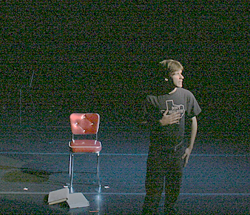

Kevin Johnson, Artistic Director PRESENTS
Talk of the Townwith EDWARD BRANDON KOSTERS
January 4th - 14th, 2007
at Zuzi Theatre
738 N. Fifth Ave
An award-winning one-man show by noted playwright and performance artist Paul Bonin-Rodriguez, Talk of the Town is a tour de force about Johnny, a 15-year-old boy living in a small town in Texas, working at the Dairy Queen and dreaming of the Judds, Princess Diana and a life that accepts his gay identity. Johnny learns about friendship, rejection and self-acceptance. Co-sponsored by the LBGT&S Alliance Fund through the Community Foundation of Southern Arizona, this project will become an independent film through Tucson's Open Lens Productions.
Here are some photos from the show.

Reviews from Tucson newspapers
Arizona Daily Star
Tucson Weekly